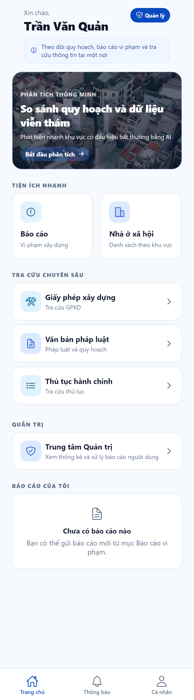
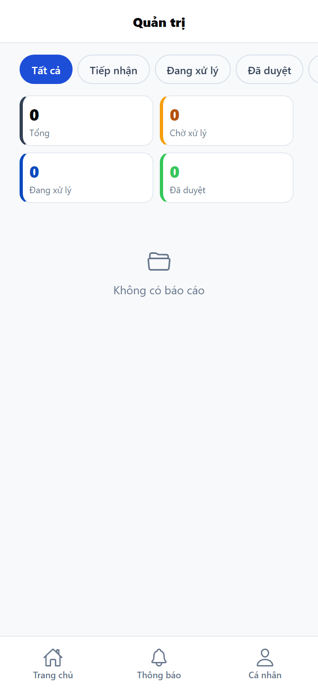

Ba quy trình trên app: vào tài khoản manager · Trung tâm Quản trị · xử lý từng báo cáo
Hệ thống
QuyHoạch AI — Quản lý quy hoạch & trật tự xây dựng
Loại tài liệu
Hướng dẫn sử dụng — vai trò Người thực hiện (app)
Phiên bản
1.2
Ngày
31/08/2026
Ứng dụng
Cùng app công dân, khu vực quản trị trên điện thoại
Địa chỉ
https://quyhoach-citizen.vercel.app
Tài khoản demo
manager@quyhoach.vn / Manager@123
Người thực hiện là cán bộ xử lý báo cáo trên điện thoại. Mã hệ thống là manager (không phải admin). Huy hiệu trên trang chủ: Người thực hiện. Tài khoản do Admin tạo trên web (mục Người dùng) hoặc seed — không tự đăng ký trên app.
Tài khoản này không đăng nhập được web Admin. Admin web dùng tài khoản riêng (admin) — xem Hướng dẫn Admin. Người dân: Hướng dẫn người dân.
Quy trình 1 — Vào app với tài khoản thực hiện
Đăng nhập bằng tài khoản manager đã được cấp, nhận huy hiệu và mở khu vực xử lý.
Mục đích Xác thực tài khoản cán bộ trên app trước khi xử lý báo cáo ngoài hiện trường hoặc khi không có máy tính.
flowchart TD
MoApp["Mở app"] --> DangNhap["Đăng nhập"]
DangNhap --> NhapTT["Email và mật khẩu manager"]
NhapTT --> HopLe{"Đăng nhập thành công?"}
HopLe -->|Không| Loi["Thiếu thông tin / Đăng nhập thất bại"]
Loi --> NhapTT
HopLe -->|Có| TrangChu["Trang chủ · huy hiệu Người thực hiện"]
TrangChu --> QT{"Mở Trung tâm Quản trị?"}
QT -->|manager| TrungTam["Trung tâm Quản trị"]
QT -->|citizen hoặc admin| NoAccess["Bạn không có quyền truy cập"]
1.1. Đăng nhập
Đường vào: Mở app hoặc https://quyhoach-citizen.vercel.app.
Hình 1.1 — Đăng nhập (cùng màn hình với người dân)
Nhập EMAIL và MẬT KHẨU tài khoản người thực hiện (demo: manager@quyhoach.vn / Manager@123).
Nhấn Đăng nhập.
Trang chủ hiện huy hiệu Người thực hiện (không phải Người dân).
Mục Tài khoản dùng thử trên màn đăng nhập liệt kê tài khoản Người thực hiện và Admin web (tham khảo).
1.2. Cấp tài khoản Người thực hiện
Form đăng ký trên app chỉ tạo Người dân, không chọn vai trò. Tài khoản manager được cấp bởi:
Admin web → mục Người dùng → Thêm người dùng → vai trò Người thực hiện; hoặc
Seed demo: manager@quyhoach.vn / Manager@123.
Tài khoản manager không vào được web Admin.
1.3. Trang chủ dành cho người thực hiện

Hình 1.3 — Trang chủ tài khoản Người thực hiện (huy hiệu + mục QUẢN TRỊ)
Ngoài tiện ích chung (So sánh AI, Báo cáo, tra cứu), tài khoản Người thực hiện có thêm khối QUẢN TRỊ:
Trung tâm Quản trị — Xem thống kê và xử lý báo cáo người dùng.
Tab Cá nhân: huy hiệu Người thực hiện; số liệu Tổng báo cáo (không hiện menu Báo cáo đã gửi).
Người dân mở Trung tâm Quản trị sẽ thấy Bạn không có quyền truy cập / Khu vực này chỉ dành cho tài khoản quản trị.
Quy trình 2 — Trung tâm Quản trị
Xem thống kê, lọc trạng thái và chọn báo cáo cần xử lý trên điện thoại.
Mục đích Nắm hàng đợi báo cáo công dân khi đang di chuyển. Tiêu đề màn hình: Quản trị.
flowchart TD
TrangChu["Trang chủ"] --> Shortcut["QUẢN TRỊ · Trung tâm Quản trị"]
Shortcut --> TrungTam["Màn Quản trị"]
TrungTam --> Stats["Thống kê: Tổng / Chờ xử lý / Đang xử lý / Đã duyệt"]
TrungTam --> Loc["Lọc: Tất cả · Tiếp nhận · Đang xử lý · Đã duyệt · Từ chối"]
Loc --> DanhSach["Danh sách báo cáo"]
DanhSach --> Trong{"Có báo cáo?"}
Trong -->|Không| Empty["Không có báo cáo"]
Trong -->|Có| Chon["Chọn một báo cáo"]
Chon --> XuLy["Màn Xử lý báo cáo"]
2.1. Mở Trung tâm Quản trị
Đường vào: Trang chủ → khối QUẢN TRỊ → Trung tâm Quản trị.

Hình 2.1 — Trung tâm Quản trị (thống kê, lọc, danh sách báo cáo)
Xem 4 thẻ thống kê: Tổng, Chờ xử lý, Đang xử lý, Đã duyệt.
Vuốt hàng lọc: Tất cả · Tiếp nhận · Đang xử lý · Đã duyệt · Từ chối.
Danh sách hiện tiêu đề, địa chỉ, tên người gửi, thời gian, nhãn trạng thái.
Kéo xuống để làm mới.
Nhấn một thẻ → màn Xử lý báo cáo.
Trống: Không có báo cáo. Lỗi mạng: Không tải được dữ liệu quản trị.
2.2. Ý nghĩa bộ lọc
Lọc trên app
Mã
Khi nào dùng
Tất cả
—
Xem toàn bộ hàng đợi
Tiếp nhận
received
Báo cáo mới, chưa xử lý
Đang xử lý
processing
Đã tiếp nhận, chưa kết luận
Đã duyệt
resolved
Đã chấp nhận (web gọi Đã giải quyết)
Từ chối
rejected
Không chấp nhận
Quy trình 3 — Xử lý từng báo cáo
Đọc nội dung hiện trường, ghi phản hồi và chuyển trạng thái. Người dân nhận thông báo ngay sau khi cập nhật.
Mục đích Kết luận một báo cáo trên điện thoại. Cùng API với trang Báo cáo công dân trên web.
flowchart TD
Mo["Mở Xử lý báo cáo"] --> Doc["Đọc tiêu đề, người gửi, địa chỉ, GPS, ảnh, mô tả"]
Doc --> PhanHoi["Nhập PHẢN HỒI CỦA QUẢN LÝ"]
PhanHoi --> Nut{"Chọn hành động"}
Nut --> Processing["Đang xử lý"]
Nut --> Duyet["Duyệt"]
Nut --> TuChoi["Từ chối"]
Processing --> Saved["Đã cập nhật"]
Duyet --> Saved
TuChoi --> Saved
Saved --> Dan["Thông báo tới người dân"]
Vòng đời trạng thái (giống web Admin):
stateDiagram-v2
[*] --> received: Cong_dan_gui
received --> processing: Dang_xu_ly
processing --> resolved: Duyet
processing --> rejected: Tu_choi
received --> resolved: Duyet_truc_tiep
received --> rejected: Tu_choi_truc_tiep
3.1. Màn Xử lý báo cáo
Từ danh sách Trung tâm Quản trị, chọn một báo cáo.
Đọc: tiêu đề + nhãn trạng thái; tên người gửi; địa chỉ; tọa độ GPS (nếu dân đã lấy); thời gian; ảnh; mô tả.
Nhập PHẢN HỒI CỦA QUẢN LÝ (ô Nhập phản hồi gửi cho người dân...).
Nhấn một trong ba nút:
Đang xử lý — tiếp nhận, chưa kết luận.
Duyệt — chấp nhận / hoàn tất (app dân hiện Đã duyệt).
Từ chối — không chấp nhận.
Thông báo Đã cập nhật / Trạng thái báo cáo đã được cập nhật.
Người dân xem phản hồi tại mục PHẢN HỒI TỪ QUẢN LÝ trên chi tiết báo cáo và nhận thông báo ở tab Thông báo.
Không có bản đồ GIS trên app — bản đồ chỉ trên web Admin. Có thể vừa xử lý báo cáo trên app vừa trên web — bản ghi là một, lần cập nhật sau ghi đè lần trước.
3.2. Tiện ích khác trên app (không bắt buộc cho xử lý)
Tài khoản Người thực hiện vẫn dùng được So sánh AI, gửi báo cáo, tra cứu pháp luật / thủ tục hành chính / giấy phép xây dựng / nhà ở xã hội giống người dân. Các bước đó không thay thế Trung tâm Quản trị.
Đổi mật khẩu, cập nhật hồ sơ, đăng xuất: tab Cá nhân — giống hướng dẫn người dân.